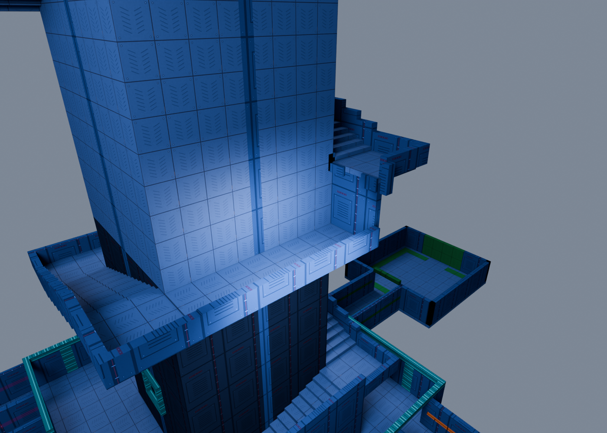
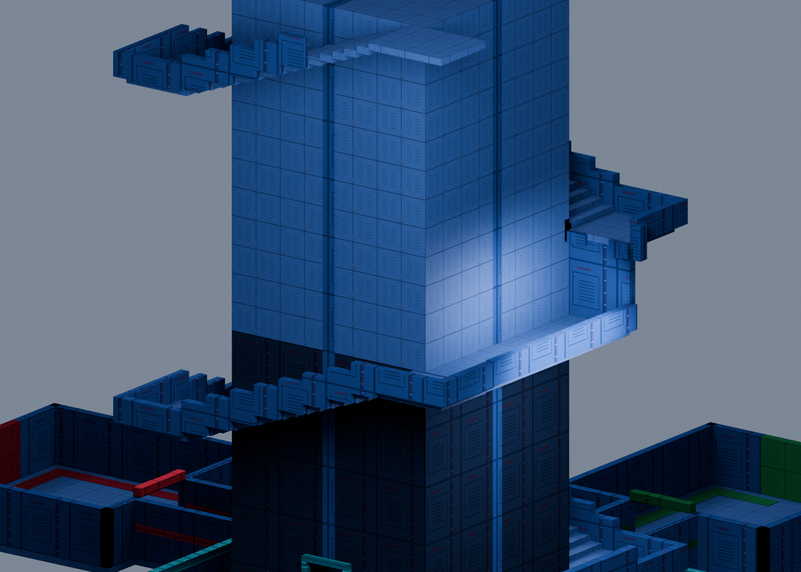

Crown materials / Lighting pass
The tower is breaking apart.
Combined full build and native navigation checks passed; ready for your playtest. These are Blender views of the actual map geometry under studio lights. Native movement, zombie traversal and lighting await the user playtest.
Twenty-four collapsed stair sections turn the descent into one-way commitments. A missing flight drops onto a broad railed deck, then reconnects to the next floor. Uneven frame remnants and broken edge plates mark where the structure failed.

The broken transition on floor 3.
The upper flight remains. Step off the exposed landing onto the deck below; the former buy door is gone.
A fixed, irregular rhythm.
Read left to right, top to bottom. The number identifies the floor being left. Door means an intact stair and paid transition; drop means the collapsed lower flight and free transition. The sequence is the same every match.
Consecutive doors and consecutive drops break up the rhythm. Ordinary traversal cannot climb back across a drop. The retained upper landing gives the Archer a grapple destination. The top transit bay and bottom crown-return link now accompany this pass.

Intact stairs beside the floor 3 collapse.
The existing panel materials, district colors and landing rooms are retained.